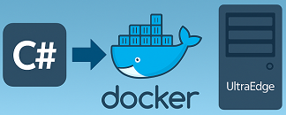

How to send a Docker file to the UltraEdge from a C# Application
Reference : RA 449
Description
This Reference Architecture describes how to send a Docker file to the UltraEdge from a C# application.
While this operation is usually demonstrated from an IGXL test program, it can also be performed from a separate standalone application.
Any language can be used to implement such an application. We show here how to do this using C#.
Several code samples are provided according to the following scenarios:
- Encrypted or non-encrypted docker files
- .Net Framework 4.8 or .Net 8
General Technical Info
- Language: C# - .Net Framework 4.8 and .Net 8
- Environment: Windows
General sequence
The following sequence can be used to deploy a non-encrypted docker file to the UltraEdge:
- Connect
- Start a session with no session tag (the parameter is an empty string)
- Send the docker file to the UltraEdge
- Load the docker image
- Execute the container
To manage an encrypted docker file, the sequence is slightly modified:
- Connect
- Start a session with no session tag (the parameter is an empty string)
- Send the encrypted docker file and additional key file to the UltraEdge
- Decrypt the docker file
- Load the docker image
- Execute the container
Function to load and run a docker
The following code sample provides a method to copy a docker file to the UltraEdge, load the docker image and run the container.
Here is a description of the parameters:
| Parameter name | Description |
|---|---|
dockerfilepath |
Full path of the docker file to send to the UltraEdge |
imagename |
Docker image name used in the code. It may be different from the actual image name loaded in the UltraEdge. |
appname |
Application name used in the code. Any name can be chosen. |
portMapping |
Mapping from docker network port to the UltraEdge network port. These are valid for applications working inbound (for example a socket server) and outbound (a client). |
dockerCommandLine |
Main application to run in the docker container. |
workingDir |
Parent folder of an exec subfolder automatically mounted to exchange files between the docker and the UltraEdge RAM disk. May be an empty string (in which case, the exec subfolder will be created in /app on the docker filesystem) |
session_tag |
Used for encryption. This is the tag name specified when the private key was installed. |
public void LoadDockerFile(
string dockerfilepath, string imagename, string appname,
string portMapping, string dockerCommandLine, string workingDir, string session_tag = "")
{
string dockerfilename = new FileInfo(dockerfilepath).Name;
// Connect to the UltraEdge
UE.Connect();
printError("Connect");
// Start a session
UE.SecureSession.Start(session_tag);
printError("Start session");
if (String.IsNullOrEmpty(session_tag))
{
// Send Docker file
UE.WriteFile(dockerfilepath, dockerfilename);
printError("Write docker file");
}
else
{
// Send Docker encrypted files
UE.WriteFile(dockerfilepath + ".enc", dockerfilename + ".enc");
printError("Write docker encrypted file");
UE.WriteFile(dockerfilepath + ".key.enc", dockerfilename + ".key.enc");
printError("Write encryption key file");
// Decrypt the docker file
UE.DecryptFile(dockerfilename + ".enc");
printError("Docker file decryption");
}
// Load docker image
UE.LoadDockerImage(imagename, dockerfilename);
printError("Load docker image");
// Run docker container
UE.Application(appname).RunDockerContainer(workingDir, dockerCommandLine, imagename, portMapping);
printError("Run docker container");
}
.Net environments
In this reference architecture, two sample projects are provided: .Net Framework 4.8 and .Net 8. As can be observed in the sample source code provided, the same .cs files are used for both environments. There are however slight differences between .Net Framework 4.8 and .Net 8.
Here are the important points to setup a C# project to work with the UltraEdge library.
- The C# project must target x64
- A reference to
UltraEdge.dllmust be added - The
UEProxy.cstakes care of resolving the DLL references. - .Net 8 only: the NuGet package
System.Configuration.ConfigurationManagermust be installed. This package was integrated to .Net Framework but has been removed by .Net. - .Net 8 only: when calling
Disconnect(), make sure to catch thePlatformNotSupportedExceptionexception to avoid crashing the application. This is due to the use ofThread.Abort()which only supported on .Net Framework applications.